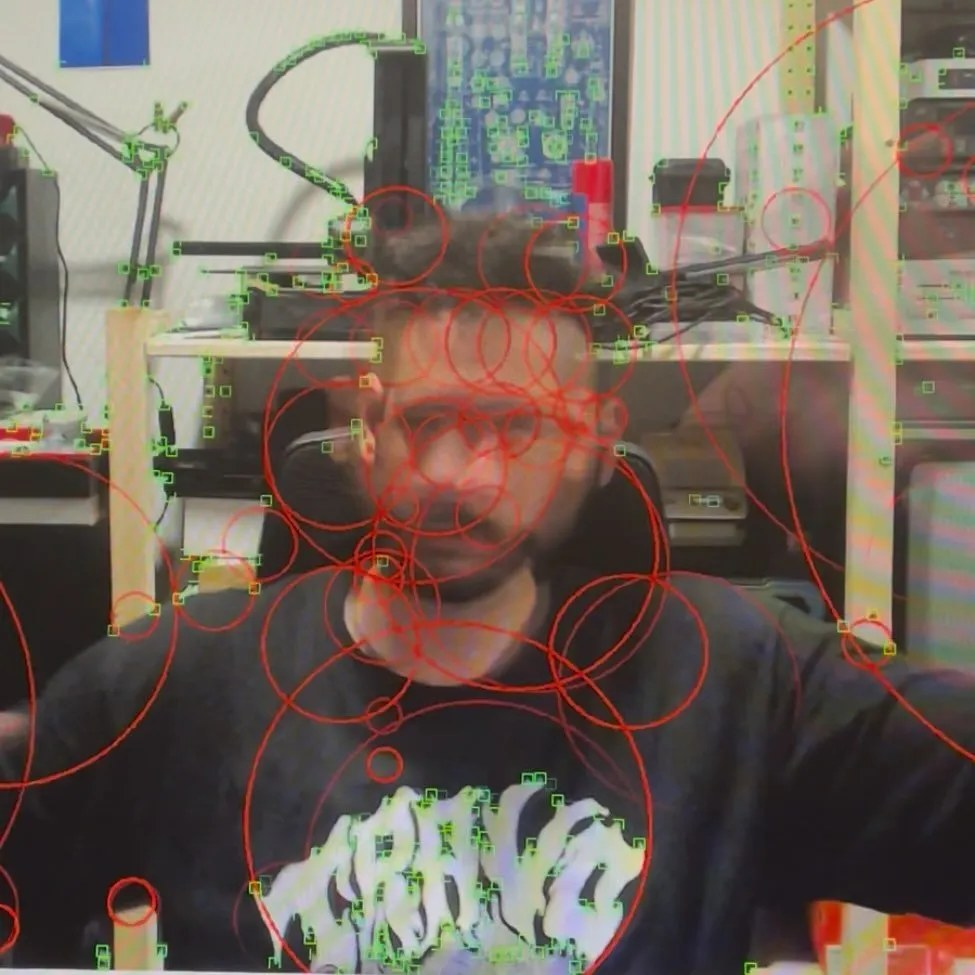

Oleg Yermak

Oleg Yermak, residente na cidade do Porto, é licenciado em Engenharia Informática pelo Instituto Superior de Engenharia do Porto. Hacker ético certificado (C|EH, Certified Ethical Hacker at EC-Council), desenvolve a sua atividade profissional enquanto Engenheiro DevOps especializado em automatização de infraestruturas críticas e otimização contínua de sistemas.
Dedica muito do seu tempo a apoiar artistas em projetos criativos e tecnológicos. É o diretor técnico do Coletivo Kindergarten e responsável pela componente tecnológica de algumas das instalações de Bruno Rodrigues Martins.
Tech developer · Porto